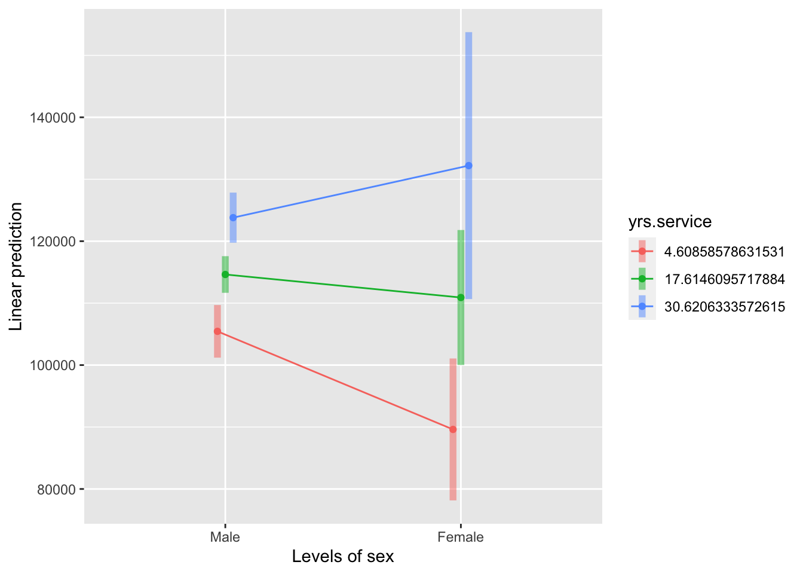

# load all libraries for this tutorial
library(emmeans)
library(carData)
library(ggplot2)ใน tutorial นี้ เราจะใช้ข้อมูล Salaries จาก carData package ซึ่งเป็นข้อมูลเงินเดือนของอาจารย์มหาวิทยาลัยในสหรัฐอเมริกา เพื่อศึกษาปัญหาความไม่เท่าเทียมกันระหว่างอาจารย์ชายและหญิง
ข้อมูลนี้มีตัวแปรที่จะใช้ในการวิเคราะห์นี้ ได้แก่
salary เงินดือน
sex เพศ แบ่งเป็น Female และ Male
yrs.service จำนวนปีที่ทำงาน
data("Salaries")
str(Salaries)## 'data.frame': 397 obs. of 6 variables:
## $ rank : Factor w/ 3 levels "AsstProf","AssocProf",..: 3 3 1 3 3 2 3 3 3 3 ...
## $ discipline : Factor w/ 2 levels "A","B": 2 2 2 2 2 2 2 2 2 2 ...
## $ yrs.since.phd: int 19 20 4 45 40 6 30 45 21 18 ...
## $ yrs.service : int 18 16 3 39 41 6 23 45 20 18 ...
## $ sex : Factor w/ 2 levels "Female","Male": 2 2 2 2 2 2 2 2 2 1 ...
## $ salary : int 139750 173200 79750 115000 141500 97000 175000 147765 119250 129000 ...การวิเคราะห์เริ่มด้วยการสร้างโมเดลสมการเชิงเส้นตรงด้วยคำสั่ง lm() โดยสามารถกำหนดให้วิเคราะห์ปฏิสัมพันธ์ด้วยเครื่องหมาย * ระหว่างตัวแปรทำนาย เช่น x1 * x2 หรือ เขียนตัวแปรที่ต้องการใส่ไว้ในโมเดลทีละตัว เช่น x1 + x2 + x1:x2 เครื่องหมาย : ใช้สร้าง interaction term ระหว่างตัวแปร
salary.lm <- lm(salary ~ yrs.service * sex, Salaries)
salary.lm2 <- lm(salary ~ yrs.service + sex + yrs.service:sex, Salaries) # same analysis
identical(salary.lm$coefficients, salary.lm2$coefficients) #same results## [1] TRUEsummary(salary.lm2)##
## Call:
## lm(formula = salary ~ yrs.service + sex + yrs.service:sex, data = Salaries)
##
## Residuals:
## Min 1Q Median 3Q Max
## -80381 -20258 -3727 16353 102536
##
## Coefficients:
## Estimate Std. Error t value Pr(>|t|)
## (Intercept) 92132.8 3995.6 23.059 < 2e-16 ***
## yrs.service 1171.4 267.6 4.377 1.54e-05 ***
## sex1 -10064.3 3995.6 -2.519 0.0122 *
## yrs.service:sex1 465.9 267.6 1.741 0.0825 .
## ---
## Signif. codes: 0 '***' 0.001 '**' 0.01 '*' 0.05 '.' 0.1 ' ' 1
##
## Residual standard error: 28420 on 393 degrees of freedom
## Multiple R-squared: 0.1266, Adjusted R-squared: 0.1199
## F-statistic: 18.98 on 3 and 393 DF, p-value: 1.622e-11ผลการวิเคราะห์แสดงค่าสัมประสิทธิ์ถดถอยแต่ละตัว
Intercept คือค่าทำนายตัวแปร Y (เงินเดือน) หากจำนวนปีที่ทำงาน yrs.serviceเป็น 0 และเป็นเพศหญิง sex = 0
ค่าความชันของ yrs.service แสดงให้เห็นว่าเมื่ออายุงานเพิ่มขึ้น 1 ปี เงินเดือนจะเพิ่มขึ้น $1,637.3 อย่างมีนัยสำคัญทางสถิติ ในกลุ่มอาจารย์ผู้หญิง (sex = 0)
ค่าความชันของ sex คือค่าความแตกต่างระหว่างเพศชายและหญิง หากควบคุมให้อายุงานเป็น 0 ปี จากโมเดลนี้เราจะทำนายได้ว่าผู้ชายจะได้เงินเดือนสูงกว่าผู้หญิงตอนเริ่มงานใหม่ $20,128.6
yrs.service:sex คือ ค่าความแตกต่างความชันระหว่างปีที่ทำงานและเงินเดือน เมื่อเทียบกับกลุ่มอ้างอิง (เพศหญิง) ค่าตัวนี้แสดงถึงปฏิสัมพันธ์ระหว่างตัวแปรทำนายทั้งสองตัว กล่าวคือความสัมพันธ์ระหว่างเงินเดือนกับอายุงานนั้นขึ้นอยู่กับเพศ โดยพบว่าความชันระหว่างอายุงานกับเงินเดือนในกลุ่มตัวอย่างชาย น้อยกว่าความชันในกลุ่มตัวอย่างหญิง (ความชันของกลุ่มเปรียบเทียบน้อยกว่ากลุ่มควบคุม จึงมีค่าติดลบ) แสดงให้เห็นว่ากลุ่มตัวอย่างหญิงจะมีอัตราการเพิ่มของเงินเดือนที่สูงกว่าผู้ชาย อย่างไรก็ดีค่าสัมประสิทธิ์ตัวนี้ไม่ถึงระดับนัยสำคัญทางสถิติ จึงยังไม่สามารถสรุปอะไรได้ชัดเจน
โดยปกติแล้ว หากไม่พบ interaction ในการทดลองผู้วิจัยไม่ควร probe interaction ต่อเพราะอาจเสี่ยงให้เกิด Type I error ขึ้น แต่ในกรณีนี้เราจะใช้ตัวอย่างนี้ต่อเพื่อสาธิตการใช้งาน R
เมื่อมีตัวแปรต่อเนื่อง W ในโมเดล หากผู้วิจัยต้องการคำนวณ EM means ของอิทธิพลตัวแปร X ในแต่ละช่วงของตัวแปร W เรามักนิยมกำหนดให้ควบคุมค่าตัวแปรต่อเนื่อง W ไว้ที่ -1 SD, Mean, +1 SD ให้ง่ายต่อการเปรียบเทียบ
เช่น ต้องการเปรียบเทียบว่า เงินเดือนชายหญิงแตกต่างกันหรือไม่ในกลุ่มคนเริ่มทำงาน (-1SD) กลุ่มทำงานมาระยะหนึ่งแล้ว (Mean) กลุ่มที่ทำงานมานานแล้ว (+1SD)
เราจะต้องสร้าง list ขึ้นมาเพื่อบรรจุรายละเอียดของการวิเคราะห์เข้าไป โดยกำหนดให้ วิเคราะห์ที่ yrs.service มี [ค่าน้อยกว่าค่าเฉลี่ย 1 SD] [ค่าเฉลี่ย] และ [ค่ามากกว่าค่าเฉลี่ย 1 SD] นอกจากนี้ยังกำหนดด้วยว่าจะให้เทียบตัวแปรเพศโดยให้ female เป็นกลุ่มอ้างอิง (ให้ใส่กลุ่มอ้างอิงไว้ข้างหลัง [ต่างจากคำสั่ง factor()])
ตอนที่สร้าง emmeans() จะต้องเพิ่มตัวเลือก at = list() โดยใช้ list ที่สร้างไว้ก่อนนี้มากำหนดค่าที่ต้องการเปรียบเทียบ
at_value <- list(yrs.service = c(mean(Salaries$yrs.service) - sd(Salaries$yrs.service), #-1SD
mean(Salaries$yrs.service), # Mean
mean(Salaries$yrs.service) + sd(Salaries$yrs.service) #+1 SD
), #yearof
sex = c("Male", "Female")) #Order for mean comparison,i.e., Order 1 - Order 2
salary.emm <- emmeans(salary.lm2, ~ sex | yrs.service, at = at_value )เมื่อเราใช้คำสั่ง summary() หรือ contrast() เราจะเห็นว่าการเปรียบเทียบจะเกิดขึ้นตามตำแหน่ง yrs.service ที่เรากำหนดไว้
summary(salary.emm) # estimated (adjusted) mean## yrs.service = 4.61:
## sex emmean SE df lower.CL upper.CL
## Male 105449 2161 393 101200 109697
## Female 89614 5826 393 78161 101067
##
## yrs.service = 17.61:
## sex emmean SE df lower.CL upper.CL
## Male 114625 1504 393 111669 117582
## Female 110909 5542 393 100013 121805
##
## yrs.service = 30.62:
## sex emmean SE df lower.CL upper.CL
## Male 123802 2056 393 119760 127844
## Female 132204 10957 393 110663 153744
##
## Confidence level used: 0.95contrast(salary.emm, "pairwise", by = "yrs.service")## yrs.service = 4.61:
## contrast estimate SE df t.ratio p.value
## Male - Female 15835 6213 393 2.548 0.0112
##
## yrs.service = 17.61:
## contrast estimate SE df t.ratio p.value
## Male - Female 3716 5743 393 0.647 0.5179
##
## yrs.service = 30.62:
## contrast estimate SE df t.ratio p.value
## Male - Female -8402 11148 393 -0.754 0.4515เราใช้คำสั่ง emmip เพื่อสร้าง interaction plot คำสั่งนี้จะมีโครงสร้าง emmip(object, formula, at, CIs)
object เป็นโมเดลที่ถูกสร้างจากคำสั่งเช่น lm() หรือ aov()
fomula เป็นสูตรเพื่อบอกคำสั่งว่าจะให้วาดกราฟอย่างไร โดยกำหนดให้อยู่ในรูป w ~ x โดย x คือตัวแปรที่ต้องการให้ปรากฏบนแกนนอน และ w คือตัวแปรที่ต้องการให้พล็อตแยกระดับ
at เป็น list ที่ใช้กำหนดจุดที่จะเปรียบเทียบ
CIs เป็น logical ว่าจะให้แสดง error bar 95% CI หรือไม่
emmip(salary.lm2, yrs.service ~ sex, at = at_value, CIs = TRUE)
เราสามารถมองภาพของปฏิสัมพันธ์นี้จากอีกมุมหนึ่งได้ ซึ่งอาจจะช่วยให้เห็นภาพความสัมพันธ์ระหว่างเวลาการทำงานกับเงินเดือนใแต่ละเพศได้ชัดเจนกว่า นั่นคือ การวิเคราะห์ดูค่าความชันอย่างง่าย (simple slopes) ของระยะเวลาทำงาน โดยแบ่งตามเพศ
ในการทดสอบความชัน จะใช้คำสั่ง emtrends(object, specs, var)
object คือ โมเดลจากการวิเคราะห์เชิงเส้น เช่น lm()
specs คือ ข้อกำหนดว่าจะเปรียบเทียบแบ่งตามตัวแปรใด เช่น ~ sex แต่ถ้าหากใส่ pairwise ~ sex คำสั่งจะทดสอบความแตกต่างของค่าความชันให้ด้วย
var คือ ตัวแปร x ที่เราต้องการหาความชัน
emtrends(salary.lm2, pairwise ~ sex, var = "yrs.service")## $emtrends
## sex yrs.service.trend SE df lower.CL upper.CL
## Female 1637 523 393 609 2666
## Male 706 114 393 482 929
##
## Confidence level used: 0.95
##
## $contrasts
## contrast estimate SE df t.ratio p.value
## Female - Male 932 535 393 1.741 0.0825emmip(salary.lm2, sex ~ yrs.service, at = at_value, CIs = TRUE)เราจะเห็นได้ว่าในกลุ่มผู้หญิง เมื่ออายุงานเพิ่ม 1 ปี เงินเดือนจะเพิ่มขึ้น $1637 ส่วนกลุ่มผู้ชายจะเพิ่มขึ้น $706 ค่าความชันทั้งสองนี้แตกต่างกัน $932 (ซึ่งเท่ากับค่าสัมประสิทธิ์การถดถอยของปฏิสัมพันธ์และสถิติทดสอบเหมือนกับการวิเคราะห์ summary(salary.lm2) เพียงแค่กลับสัญลักษณ์เนื่องจากวิธีตั้งค่ากลุ่มอ้างอิงของแต่ละคำสั่ง)
สำหรับกราฟเปรียบเทียบความชันจะเห็นภาพความสัมพันธ์ระหว่างอายุงานกับเงินเดือนของแต่ละเพศได้อย่างชัดเจน
ใช้ ggplot2 เพื่อสร้างกราฟที่มีความสวยงามมากขึ้น
emm.summary <- summary(salary.emm)
ggplot(emm.summary, aes(x = yrs.service, y = emmean, color = sex)) +
geom_point(position = position_dodge(.2)) +
geom_line(aes(group = sex), position = position_dodge(.2)) +
geom_errorbar(aes(ymin = lower.CL, ymax = upper.CL), width = .3, position = position_dodge(.2)) +
xlab("Year of Service") +
ylab("Salary") +
theme_classic() +
scale_color_brewer(palette="Set1")Copyright © 2022 Kris Ariyabuddhiphongs